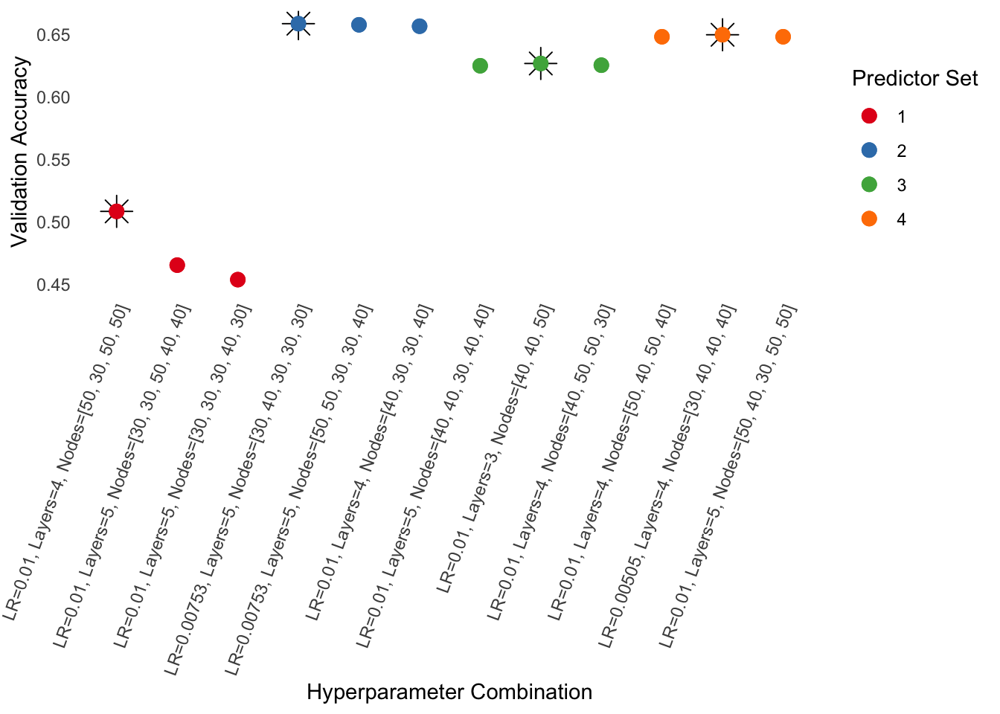
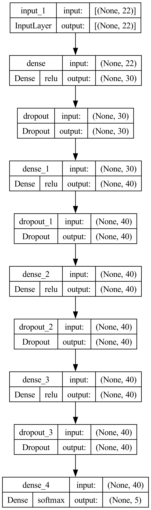

| category 0 | category 1 | category 2 | category 3 | category 4 | |
|---|---|---|---|---|---|
| train | 0.328 | 0.303 | 0.236 | 0.088 | 0.044 |
| test | 0.320 | 0.312 | 0.236 | 0.089 | 0.043 |
Methodology
This section outlines the comprehensive methodology employed for predicting avalanche hazard levels using neural networks. We describe the data preprocessing pipeline, experimental design with four distinct predictor sets, neural network architecture selection process, and hyperparameter tuning strategy. The methodology ensures reproducible results while systematically evaluating the contribution of different variable types to forecasting accuracy.
Software and Setup
Neural network modelling was implemented using the library, accessed through its R wrapper. Keras is an open-source deep learning framework known for its modularity and relatively gentle learning curve compared to other libraries such as PyTorch. Its modular design makes it well suited for projects that require experimentation with multiple configurations.
Because Keras functions in R act as wrappers around the underlying Python functions, version control is critical to ensure reproducibility. This project was developed in with .
Data Preparation
The modelling goal was to predict . To prevent data leakage, the variable was excluded from the predictor sets, since this information would not be available in real-world forecasting scenarios.
A was applied, with a fixed random seed to ensure reproducibility. Although a validation set is often held out, Keras provides internal validation handling, so this was not specified manually.
Table 1 reports the class distribution across training and test sets. The proportions are broadly consistent between the two partitions, but the data exhibits strong class imbalance. Categories 0 and 1 each account for roughly 30% of the data, category 2 for 23%, while categories 3 and 4 are severely underrepresented (9% and 4% respectively). This imbalance risks biasing the model toward predicting majority classes.
To mitigate this, were introduced. The weights were set inversely proportional to the prevalence of each category in the training set, so that errors on minority classes carried higher penalties during training. Alternative methods such as bootstrap resampling could also be considered, but were not explored here.
The table above reports the percentage of each category of FAH that is in the training and test data. It is important that the percentages are approximately equal in both sets and indeed this is the case. This is good but there is a problem. For the best results there should be approximately the same number of observations from each category in both the training and test sets, which is not the case for this data. Category 0 and 1 both are roughly the same at roughly 30% of total observations each. Category 2 is slightly lower with 23% but category 3 and 4 are hugely unrepresented in the data with only 9% and 4% respectively. This is an issue because big imbalances such as this will cause the model to optimise for correctly identifying observations from categories 0, 1 and 2.
There a few possible methods we can use to mitigate this issue but the method chosen for this project was to define custom class weights so that incorrect predictions have different penalties for each category. The idea is that underrepresented categories have higher weights so that in the training the model gets penalised more heavily and hopefully the final model is better at making predictions for the underpresented categories. The weights chosen were inversely proportional to the percentage of appearance in the training data. A possible area of further experimentation is using bootstrap sampling to equalise the percentages of each category.
Predictor Sets
For this project there were 4 predictor sets that were evaluated. Predictor set 1 contained variables relating to the location of the observation. Predictor set 2 contained variables relating to the weather conditions of the observation. Predictor set 3 contained variables relating to a snow pack test. Predictor set 4 contained all the varibles in the dataset and thus contained all three predictor sets inside it. The final model will be built using all the available data, so predictor set 4. The remaining three predictor sets serve as yardstick to which we can compare which sets of variables are important.
Model Development
Neural networks are extremely flexible and configurable models. But this configurability means that there are several parameters that need to be defined before the model can be trained. In order to find the optimal configuration, hyperparameter tuning needs to be done first. Some of the hyperparameters we have control over include: number of layers, number of nodes per layer, the acitvation function to use on each layer, the dropout rate and the learning rate. keras is flexible and allows the user control of almost every aspect of the model through the parameters. In order to do the hyperameter tuning in R, the kerastuneR library is used. But in order to do the hyperparameter tuning with kerastuneR the model needs to be wrapped in a function that accepts as an input the hyperparameter configuration, and outputs a model.
For this project, it was decided to tune for the number of layers, number of nodes on each layer and the learning rate. The activation function was chosen to be rectified linear units(Relu) and the dropout rate was set to 0,1. Each dense layer was followed by a dropout layer. The specific values that were tuned across were 1-5 layers(step size of 1) with 30-50(step size of 10) nodes on each layer and 5 equally spaced learning rates [0,01 - 0,0001]. Therefore, there were a total of 75 unique models that could be fitted. The metric the Neural Network tries to minimize is the metric_categorical_accuracy. This was chosen since the target variable has more than 1 category.
Hyperparameter Tuning
kerastuneR has multiple tuning algorithms, we have used the RandomSearch algorithm. RandomSearch takes random combinations of the provided hyperparameters and fits the model each time. Since the combination of hyperparameters is random, there is a possibility that the same mode configuration is ran multiple times by the algorithm. The algorithm does attempt to mitigate this but it not guaranteed to stop duplicate runs. We do have some control over this though by setting the max_trials variable to the total number of unique models that can be specified from our selected tuning ranges. It has also been specified that each model should be fit 3 times by setting executions_per_trial = 3. This reduces variation in the results since there is an element of randomness in the initialisation of the model. A validation split of 20% was used and shuffle = T was used. Doing this shuffles the which observations get used as the validation set. This helps reduce the chances of overfitting.
All the results from tuning were saved into folders so that the results can be extracted and used for further analysis. The tuning was was undertaken is by no means exhaustive, no tuning can ever be, but the range of values tuned over is relatively small and therefore the results should be taken with a pinch of salt. With more time and perhaps more compute power a better result is possible.
kerastuneR saves the tuning results as .json files. Each trial will be its own folder and inside that folder there will be a .json file containing information about the configuration of the Neural Network and the validation accuracy it achieved. The results were compiled into a single table containing the top 3 configurations from each of the predictor sets.
Results
This section presents the comprehensive outcomes of our neural network approach to avalanche hazard prediction. We begin by examining the performance hierarchy across different predictor sets, followed by detailed analysis of optimal hyperparameter configurations. The section culminates in an evaluation of the final model’s predictive capability, with particular attention to class-wise performance across the five avalanche hazard levels.
Hyperparameter Tuning Outcomes
# #| label: fig-myplot
#|
load('../tuning/tuning_summary_table.RData')
### The Tuning plot
names(df) <- gsub(" ", "_", names(df))
set.seed(1) # for reproducibility of shuffle
top_10_shuffled <- df %>%
group_by(Predictor_set) %>%
sample_frac(1) %>% # shuffle rows within each Predictor_set
ungroup() %>%
rowwise() %>%
mutate(
combo_label = paste0(
"LR=", Learning_rate,
", Layers=", Number_of_layers,
", Nodes=[",
paste(na.omit(c_across(starts_with("nodes_on_layer_"))), collapse = ", "),
"]"
)
) %>%
ungroup()
# Now reorder combo_label factor so predictor sets are grouped but shuffled inside
top_10_shuffled <- top_10_shuffled %>%
arrange(Predictor_set) %>% # predictor sets grouped in order
mutate(combo_label = factor(combo_label, levels = unique(combo_label)))
# Find optimal points per predictor set (same as before)
optimal_points <- top_10_shuffled %>%
group_by(Predictor_set) %>%
filter(Validation_accuracy == max(Validation_accuracy)) %>%
ungroup()
my_colors <- c(
"1" = "#e41a1c", # bright red
"2" = "#377eb8", # strong blue
"3" = "#4daf4a", # vivid green
"4" = "#ff7f00" # bright orange
)
# Plot
ggplot(top_10_shuffled, aes(x = combo_label, y = Validation_accuracy, color = factor(Predictor_set))) +
geom_point(size = 3) +
geom_point(data = optimal_points, aes(x = combo_label, y = Validation_accuracy),
color = "black", size = 5, shape = 8) +
geom_point(size = 3)+
theme_minimal() +
theme(
axis.text.x = element_text(angle = 70, hjust = 1),
panel.grid.major = element_blank(),
panel.grid.minor = element_blank()
) +
xlab("Hyperparameter Combination") +
ylab("Validation Accuracy") +
scale_color_manual(values = my_colors, name = "Predictor Set")
###############

Systematic hyperparameter tuning across four predictor sets revealed distinct performance patterns, visualized in the above figure. The plot shows validation accuracy distributions for various architectural configurations, with Predictor Set 2 (weather conditions) achieving the highest peak performance (~66%), closely followed by Predictor Set 4 (all variables) at ~65%.
Table 2 details the top three configurations for each predictor set, confirming the performance hierarchy. The marginal improvement of Set 2 over Set 4 indicates that weather variables capture the most critical forecasting signals, with topographic and snow-pack data providing limited incremental value.
| Predictor set | Validation accuracy | Learning rate | Number of layers | nodes on layer 1 | nodes on layer 2 | nodes on layer 3 | nodes on layer 4 | nodes on layer 5 |
|---|---|---|---|---|---|---|---|---|
| 1 | 0.50829 | 0.01000 | 4 | 50 | 30 | 50 | 50 | NA |
| 0.46535 | 0.01000 | 5 | 30 | 30 | 50 | 40 | 40 | |
| 0.45376 | 0.01000 | 5 | 30 | 30 | 30 | 40 | 30 | |
| 2 | 0.65826 | 0.00753 | 5 | 30 | 40 | 30 | 30 | 30 |
| 0.65735 | 0.00753 | 5 | 50 | 50 | 30 | 30 | 40 | |
| 0.65621 | 0.01000 | 4 | 40 | 30 | 30 | 40 | NA | |
| 3 | 0.62645 | 0.01000 | 3 | 40 | 40 | 50 | NA | NA |
| 0.62509 | 0.01000 | 4 | 40 | 50 | 50 | 30 | NA | |
| 0.62463 | 0.01000 | 5 | 40 | 40 | 30 | 40 | 40 | |
| 4 | 0.64940 | 0.00505 | 4 | 30 | 40 | 40 | 40 | NA |
| 0.64781 | 0.01000 | 4 | 50 | 40 | 50 | 40 | NA | |
| 0.64781 | 0.01000 | 5 | 50 | 40 | 30 | 50 | 50 |
Architecturally, models with 4–5 layers and 30–50 nodes per layer consistently outperformed others, with no clear gains beyond 5 layers. The optimal configuration from Predictor Set 4—selected for final evaluation—employed 4 hidden layers with [30, 40, 40, 40] nodes and achieved 64.9% validation accuracy.
The optimal configuration from Predictor Set 4—selected for final evaluation—employed 4 hidden layers with [30, 40, 40, 40] nodes and achieved 64.9% validation accuracy, representing the best balance of performance and generalizability.
Optimal Architecture

The selected architecture utilizes ReLU activation in hidden layers and softmax output activation, appropriate for the multi-class ordinal nature of avalanche hazard prediction. This configuration represents an optimal balance between model complexity and predictive performance for the comprehensive feature set. This architecture balanced model complexity with predictive accuracy and was used for final evaluation on the test set.
Model Evaluation
Confusion Matrix
| Actual | 0 | 1 | 2 | 3 | 4 |
|---|---|---|---|---|---|
| 0 | 857 | 420 | 88 | 15 | 10 |
| 1 | 118 | 326 | 219 | 51 | 7 |
| 2 | 29 | 231 | 413 | 186 | 94 |
| 3 | 0 | 4 | 18 | 20 | 16 |
| 4 | 0 | 0 | 4 | 7 | 8 |
The confusion matrix of the the fitted model is reported in Table 3. It is clear that category 0 is the best estimated while categories 3 and 4 are estimated the worst. This result was expected since category 3 and 4 are very underepresented in both the training and test data. Concrete metrics of the model performance is given in the table below.
Class-Level Metrics
| Sensitivity | Specificity | Pos Pred Value | Neg Pred Value | Precision | Recall | F1 | Prevalence | Detection Rate | Detection Prevalence | Balanced Accuracy | |
|---|---|---|---|---|---|---|---|---|---|---|---|
| Class: 0 | 0.854 | 0.751 | 0.617 | 0.916 | 0.617 | 0.854 | 0.716 | 0.320 | 0.273 | 0.443 | 0.802 |
| Class: 1 | 0.332 | 0.817 | 0.452 | 0.729 | 0.452 | 0.332 | 0.383 | 0.312 | 0.104 | 0.230 | 0.575 |
| Class: 2 | 0.557 | 0.775 | 0.433 | 0.850 | 0.433 | 0.557 | 0.487 | 0.236 | 0.131 | 0.303 | 0.666 |
| Class: 3 | 0.072 | 0.987 | 0.345 | 0.916 | 0.345 | 0.072 | 0.119 | 0.089 | 0.006 | 0.018 | 0.529 |
| Class: 4 | 0.059 | 0.996 | 0.421 | 0.959 | 0.421 | 0.059 | 0.104 | 0.043 | 0.003 | 0.006 | 0.528 |
Sensitivity gives the percent of the time the model predicted an observation as belonging to a category and it actually belonging to that category. The sensitivity for class 0 is the best with a value of 0,854. There is a steep drop off for the other classes but class 2 is the second highest with a value of 0,557 and the rest are all below 0.5 meaning that more often than not, the model is unable to identify the correct category. An analogy for sensitivity is a test with high sensitivity(close to the maximum of 1) will identify most of the patients with with the flu as having the flu but this may mean that lots of patients without the flu also get identified as having the flu. An extreme case may be if the model predicted all observations as belonging to category 0. Then the sensitivity would be 1,meaning that all observations that belong to category 0 are predicted to be category 0. So there need to be a balance because we do not want this
Specificity gives the percent of time the an observation does not belong to a specific category and the model predicts it as not belonging to that category. High specificity(close to the maximum of 1) is analogous to a test rarely every flagging someone as having the flu when they don’t. A perfect model will have high sensitivity with a high specificity, meaning that it is able to identify when observations belong to a category and does not incorrectly predict other observations as belonging to that category. The table above indicates that all the categories have relatively high specificity. Class 4 has a specificity of 0.996 which on the surface looks great but because the sensitivity is so low, this high specificity just means that the model rarely every predicts any observations as belonging to category 4. The same follows for category 3. This is also seen in the extremely low detection rate and prevalence for these categories. These results, specifically for categories 3 and 4 are an indication that perhaps just reweighting the classes was not enough to overcome the imbalance in the data.
A better metric for instances such as this where the data is imbalanced is the F1 score. The F1 score is the harmonic mean of the precision and recall. The precision is the percentage of observations that belonged to a category and were correctly predicted as belonging to that category. The recall is just the sensitivity. The F1 score, same as the other metrics, ranges from 0 to 1 with 0 being the worst and 1 being the best. The F1 score is useful because the harmonic mean because it is less affected by extreme values than the arithmetic mean. Categories 4 and 3 are by far the worst with values of 0,104 and 0,119. Category 0 has the best F1 score with a value of 0,716. Then category 1 has a value of 0,383 and category 3 has a score of 0,487.
All these values, except for category are quite poor and indicate lack of predictive power. This is reflected in the fact that the model achieved an accuracy of 51,7% on the test set. The model is better than blindly guessing which we expect to return an accuracy of 20% but the model lacks predictive power.
Interpretation
The results highlight the challenges of severe class imbalance. While class reweighting improved performance somewhat, minority classes remained poorly predicted. This suggests that more aggressive strategies may be necessary, such as resampling (e.g., bootstrapping or SMOTE), expanding the hyperparameter search space, or exploring alternative architectures.
Despite these limitations, the study provides useful insights. It demonstrates that weather variables are the dominant predictors of avalanche hazard and that neural networks can achieve moderate accuracy with relatively simple architectures. However, improving detection of rare but high-consequence hazard categories remains an important direction for future work.